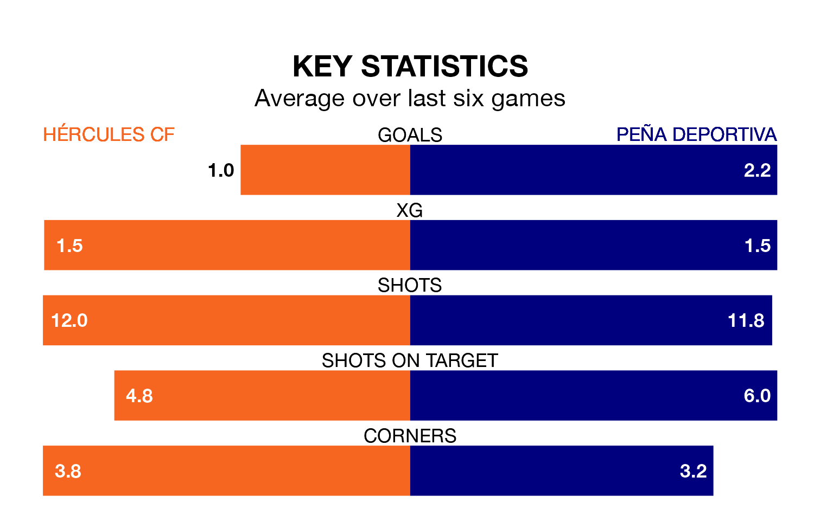

Hércules CF host Peña Deportiva at the Estadio José Rico Pérez on early Sunday on the back of three consecutive wins in the Segunda División RFEF Group 3.
Hércules have picked up 12 points from their last six games, and they face a Peña Deportiva side who have lost their last two matches, and collected 11 points from the last possible 18.
With 44 goals in 31 games so far this season, Hércules are the league's joint-third-highest scorers with 1.4 goals per game. And they are conceding fewer than average, letting in 27 goals at a rate of 0.9 per game.
Peña Deportiva are also above average scorers, with 1.4 goals per game, compared to a league average of 1.2. They have conceded 1.6 goals per game.
The home team are second in the table after 31 games, of which they have won 16 and drawn eight, earning 56 points.
The visitors are nine places behind Hércules in 11th, with 11 wins and eight draws putting them on 41 points.
In the last 10 years, Hércules and Peña Deportiva have played each other on seven occasions. Hércules won four of them and Peña Deportiva three.
On average, Hércules scored 1.4 goals and Peña Deportiva 1.0 in those matches.
Their last meeting was on December 10, when Hércules won 5-1 away.
Hércules's last match was on Sunday, a 1-0 win against Manresa.
Peña Deportiva drew 2-2 with CE Europa last time out, also on April 14, with Jaume Tovar Seguí and Víctor Barroso Maya on the scoresheet.
Updated: 11:31 (UTC), 15/04/24